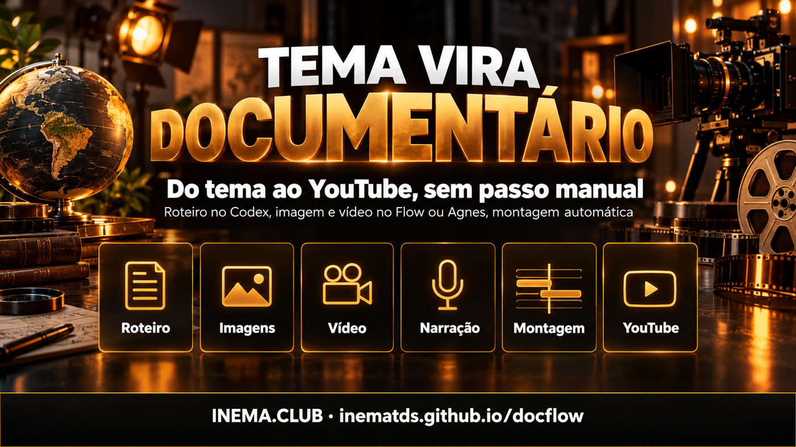

O docflow é uma ferramenta de linha de comando que cria documentários curtos narrados, do tipo usado em canais "dark" do YouTube, em que não aparece ninguém. Você responde 6 perguntas num arquivo (tema, estilo, duração, duração de cada cena, formato e referências) e ele faz o resto: escreve o roteiro, gera as imagens e os vídeos de cada cena, narra, monta com música e transições e publica no YouTube. Ele recria, de forma automática, um processo que normalmente se faz à mão no ChatGPT, no Google Flow e no CapCut. Para usar, você precisa de Linux com Python, ffmpeg e o Codex.
O que é
Um processo manual de 6 etapas virou um comando
O ponto de partida foi um tutorial de canal dark: GPT para o roteiro, Google Flow para imagens e vídeos, AI Studio para a voz, Flow Music para a trilha, CapCut para a montagem e upload manual. O docflow faz as mesmas etapas sozinho.

📝 O "flow" do roteiro
As mesmas 6 perguntas do tutorial, respondidas num arquivo tema.yaml. O Codex (pela assinatura) devolve roteiro, narração, prompts de imagem e de vídeo numerados, prompt de música e título, descrição e tags.
🔁 Motor trocável
Imagem e vídeo saem do Google Flow (automatizado no navegador) ou da API Agnes (imagem e imagem→vídeo, US$ 0). Narração, montagem e publicação são iguais para os dois.
✂️ O CapCut no ffmpeg
Ajusta cada clipe ao tempo da fala, coloca transição entre cenas, fade do preto, som ambiente a 16% e música que abaixa sozinha quando a voz fala. Depois publica pelo yt-pubx.
Como funciona
Cinco etapas, cada uma um comando
Todas podem ser repetidas: refazem só o que falta. O material fica numerado por cena em ~/projetos/output/docflow/<slug>/.
tema.yaml→roteiro (Codex)→gerar (Flow ou Agnes)→narrar (inemavox)→montar (ffmpeg)→publicar (yt-pubx)
A
Flow automatizado
Conta Google. Um robô (Playwright) abre o Flow, cola os blocos de prompts no agente, aprova, pede a coleção e baixa o zip. Escrito, ainda não validado: falta o primeiro login.
B
Codex + Agnes
Imagens com agnes-image-2.1-flash e vídeo com agnes-video-v2.0 (imagem→vídeo), por API, a custo zero. Testado: fez o vídeo de exemplo.
C
Local (planejado)
Sem API: flux2-klein para imagem e imagem com movimento para vídeo. Ainda não implementado.
Pré-requisitos
O que precisa estar instalado
O docflow orquestra ferramentas que já existem. Confira antes do primeiro uso.
Python + ffmpeg
Python 3 com PyYAML para o orquestrador e ffmpeg para a montagem.
Escreve o roteiro pela sua assinatura. O modelo pode ser trocado pela variável DOCFLOW_CODEX_MODELO.
# conferircodex --version
Voz, imagem e YouTube
inemavox no ar (porta 8010) para a narração, cliente Agnes do videos-agnes e o yt-pubx com o canal autorizado. Para o motor Flow: Node + Playwright.
# conferir~/projetos/yt-pubx/yt-pubx canais
Guia de uso · passo a passo
Do tema ao vídeo publicado
Exemplo real: o vídeo "Egito Antigo em um minuto", feito com o motor Agnes.
1
Responda as 6 perguntas
Copie temas/egito.yaml e troque o tema. 60 s de duração total com cenas de 10 s dá 6 cenas.
slug: egito-antigo
tema: "O Egito Antigo em um minuto: do Nilo às pirâmides..."estilo: "realistic cinematic documentary, natural golden light"duracao_total: 60
duracao_cena: 10
formato: "16:9"motor: agnes # flow | agnesvoz: nei
thumb_cena: 3 # imagem usada na thumbcanal: lives10
2
Rode tudo de uma vez
Roteiro, imagens, vídeos, narração e montagem. No exemplo levou cerca de 9 minutos.
O robô abre um Chromium no display virtual :99. Você entra na conta Google pelo VNC (localhost:5900) e aceita os termos do Flow. A primeira rodada calibra os botões, com um print de cada passo em tmp/flow-*.png.
As 6 imagens geradas pela API Agnes, uma por cena: Nilo, unificação, Gizé, Núbia, Abu Simbel e Alexandria.A thumb que o yt-pubx montou a partir da cena 3 (thumb_cena: 3).
Roadmap
O que já existe e o que vem
Versão 0.2.0.
Feito
Motor Agnes, montagem e publicaçãoVídeo de exemplo gerado, conferido e publicado; descrição com rodapé automático.
Próximo
Validar o motor FlowPrimeiro login da conta Google e calibração dos botões do agente do Flow.
Depois
Voz e música pelo navegadorAI Studio TTS e Flow Music como motores, pelo mesmo robô.
Planejado
Caminho localflux2-klein para imagens e imagem com movimento para vídeo, sem API nenhuma.